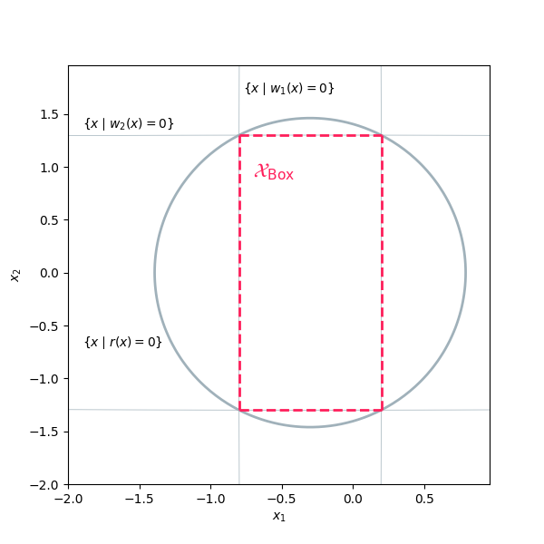

Envelope for Box Constraints
This example illustrates how to define and solve a simple SOS optimization problem using SOSOpt.
In this example, we aim to compute the coefficients of a polynomial \(r(x)\) whose zero-sublevel set contains the box-like set defined by the intersection of the zero-sublevel sets of polynomials \(w_1(x)\) and \(w_2(x)\):
The polynomial \(r(x)\) is parameterized by the symmetric matrix \(Q_r\), and is expressed as:
where \(Z(x)\) is a vector of monomials in \(x\).
The SOS optimization problem is formulated to find \(r(x)\) that maximizes the surrogate for the volume of the zero-sublevel set of \(r(x)\), represented by the trace of \(Q_r\). The resulting SOS problem is defined as:
This formulation seeks to minimize the trace of \(Q_r\) while ensuring that \(r(x)\) is negative within the box-like set \(\mathcal X_\text{Box}\).
import numpy as np
import numpy.matlib
from matplotlib import pyplot
import polymat
import sosopt
state = sosopt.init_state()
variable_names = ("x_1", "x_2", "x_3")
x1, x2, x3 = tuple(polymat.define_variable(name) for name in variable_names)
x = polymat.v_stack((x1, x2, x3))
w1 = ((x1 + 0.3) / 0.5) ** 2 - 1
w2 = (x2 / 1.3) ** 2 + (x3 / 1.3) ** 2 - 1
state, r_var = sosopt.define_polynomial(
name="r",
monomials=x.combinations(degrees=(1, 2)),
).apply(state)
r = r_var - 1
state, sympy_repr = polymat.to_sympy(r).apply(state)
print(f"r={sympy_repr}")
state, constraint = sosopt.quadratic_module_constraint(
name="rpos",
smaller_than_zero=r,
domain=sosopt.set_(
smaller_than_zero={
"w1": w1,
"w2": w2,
},
),
).apply(state)
Qr_diag = sosopt.gram_matrix(r, x).diag()
problem = sosopt.sos_problem(
lin_cost=-Qr_diag.sum(),
quad_cost=Qr_diag,
constraints=(constraint,),
solver=sosopt.cvxopt_solver,
)
state, sos_result = problem.solve().apply(state)
# Plot Preparations
###################
# materialize polynomials w1(x), w2(x), and r(x), allowing to evaluate these
# polynomials for specified vectors
state, w1_array = polymat.to_array(w1, x).apply(state)
state, w2_array = polymat.to_array(w2, x).apply(state)
state, r_array = polymat.to_array(r.eval(sos_result.symbol_values), x).apply(state)
def select_max(arrays):
def func(x, y):
def evaluate_arrays():
for array in arrays:
yield array(proj(x, y))
return max(evaluate_arrays())
return func
# define 2D projection for plotting
def proj(x, y):
return np.array((x, y, 0)).reshape(-1, 1)
# create mesh (i_d, i_q)
ticksX = np.arange(-2, 1, 0.04)
ticksY = np.arange(-2, 2, 0.04)
n_row, n_col = len(ticksY), len(ticksX)
X = np.matlib.repmat(ticksX, n_row, 1)
Y = np.matlib.repmat(ticksY.reshape(-1, 1), 1, n_col)
Z_w1 = np.vectorize(lambda x, y: w1_array(proj(x, y)))(X, Y)
Z_w2 = np.vectorize(lambda x, y: w2_array(proj(x, y)))(X, Y)
Z_box = np.vectorize(select_max((w1_array, w2_array)))(X, Y)
Z_r = np.vectorize(lambda x, y: r_array(proj(x, y)))(X, Y)
# Plot results
##############
pyplot.close()
fig = pyplot.figure(figsize=(6, 6))
ax = fig.subplots()
# plot contour of zero-sublevel sets {x | w1(x) <= 0}, {x | w2(x) <= 0}, and {x | r(x) <= 0}
ax.contour(X, Y, Z_w1, [0], linewidths=0.5, colors=["#A0B1BA"])
ax.contour(X, Y, Z_w2, [0], linewidths=0.5, colors=["#A0B1BA"])
ax.contour(X, Y, Z_box, [0], linewidths=2, colors=['r'], linestyles=['dashed'])
ax.contour(X, Y, Z_r, [0], linewidths=2, colors=["#A0B1BA"])
ax.text(-0.77, 1.7, r'$\{x \mid w_1(x) = 0 \}$')
ax.text(-1.9, 1.37, r'$\{x \mid w_2(x) = 0 \}$')
ax.text(-1.9, -0.7, r'$\{x \mid r(x) = 0 \}$')
ax.text(-0.7, 0.9, r'$\mathcal{X}_\text{Box}$', fontsize=16, color="#FF1F5B")
ax.set_xlabel('$x_1$')
ax.set_ylabel('$x_2$')
pyplot.show()
This figure illustrates the contour of the zero-sublevel sets of the resulting polynomial \(r(x)\):
